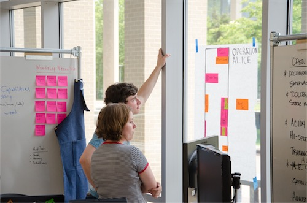

The Advanced Woodshop
Isabel "Izzy" Harrison
Spent all evening watching woodworking videos
Six months ago I spent a foggy morning sitting by the beach designing ductwork (and avoiding writing this reflection). Weeks after our summer project had wrapped up, I was sitting at home on vacation, still too excited about this project to be doing anything else. Today I am sitting at the desk I created in our new woodshop. Just a couple weeks ago we formally opened the doors, and we have already trained around 20 community members. Just eight months ago, this was merely an idea in my head. I had thrown it out there a couple times, but it hadn’t quite caught on. I was sure it was something that Olin would benefit greatly from, but I wasn’t sold that it was something we were capable of creating/running, and neither was the rest of the team.
Dreams about dowling jig now realities
I had never been so excited about doing “work” before this summer. During our 8 weeks, I spent countless hours after work watching woodworking videos, and specing tools. Looking back to 3 months ago, I was decently excited going into the summer project, but i had no idea what I was getting myself into.
Olin: we have no red tape?
The advanced woodshop started as Operation Alice, a silly nickname, and a hypothetical future for wood resources at Olin. We recognized that the space we had available for these resources had several issues, but wanted to explore what was possible. We didn’t get the official approval for this space until after the summer experience had concluded.
Table saw is the right tool.
At this point I am happy to say that the advanced woodshop is the project that I am most proud of. I have created something awesome (with the help of many others, of course) that the Olin community is beginning to use in great ways. This project exemplifies why I am glad to have come to Olin. At no other college would I have had the opportunity to create a space like this from scratch (or create any space at all). This project is my legacy at Olin.
It feels good to finish something.
I don’t think any of us could quite imagine the effect our summer work would have on The Shop, but I think it’s at this point safe to say that we did not fail. Yes, there were some things that probably were a waste of time (ahem, painting the ductwork red) but the overall effect of our work has been amazing. Yesterday I discovered an exciting statistic: from fall 2016 to fall 2017, trainings have increased by roughly 50%. This excites me for the future of fabrication at Olin.
Teaching is hard but very rewarding.